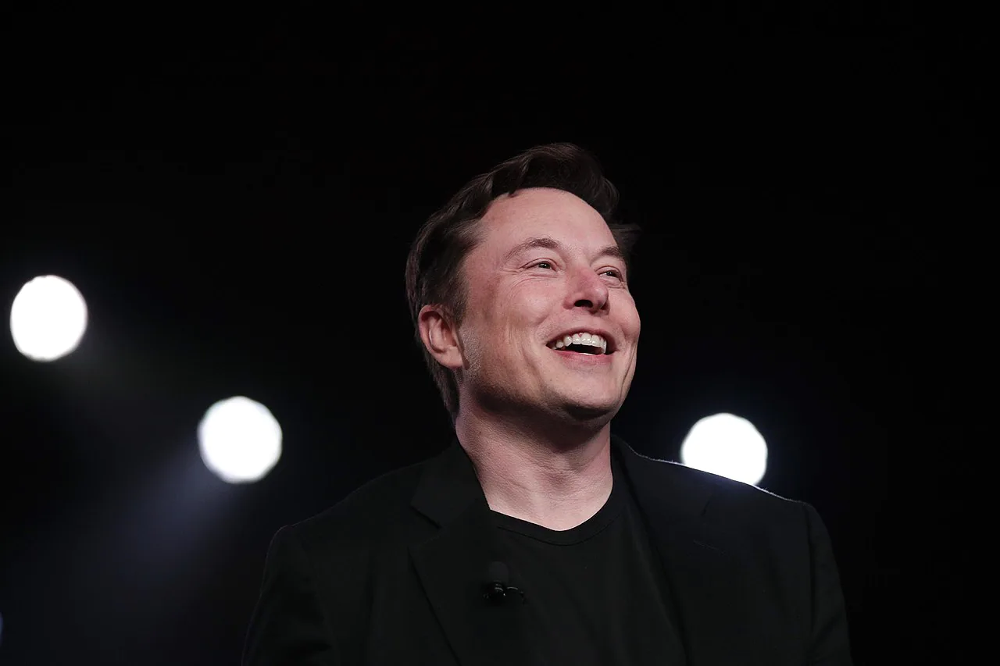

Elon Reeve Musk is an entrepreneur and business magnate. He is the founder, CEO, and Chief
Engineer at SpaceX; early-stage investor, CEO, and Product Architect of Tesla, Inc.; founder of The Boring
Company; and co-founder of Neuralink and OpenAI.
Today, Elon Musk stands as an emblem of a revolutionary inventor. We think of him as a man who is successful at
everything he does. But his reflection on his personal life illustrates that life has not always been easy for
him; as a child, he was bullied at school and abused at home, and he experienced a great deal of pain. However,
Musk credits his early traumatic experiences with a great portion of his success. Without adversity, he believes
that he might not have been so motivated to succeed. But his pain is not the only driving factor in his success;
Elon Musk is also someone of incredible passion and intellect and he is relentlessly committed to pursuing his
goal: improving the world through technology.
THE EARLY YEARS
The introduction to this book neatly summarizes most of what the average person knows about
Elon Musk. He is a
notable public figure because of his contributions to science and technology; in the age of Instagram, this —
along
with his marriage to singer Grimes — has earned him something of a celebrity status. But how much do we really
know
about the man behind these accomplishments? In this chapter, we’ll take a look at Elon Musk’s childhood and
learn
about the experiences that made him the man he is today. Although Musk is now one of America’s most notable
billionaires, he didn’t start out that way. Elon Musk was born in 1971 in Pretoria, South Africa. And although
conspiracy theories have circulated, suggesting that his father — Errol Musk — owned an emerald mine and
inherited
apartheid money, Musk has solidly refuted these stories.
MUSK’S EDUCATIONAL EXPERIENCES AND EARLY CAREER
In South Africa at that time, young men faced mandatory conscription into the military when
they reached the age
of
17. Musk already knew that military service wasn’t for him, so he emigrated to Canada. Because his mother was a
Canadian national, her heritage would enable him to later obtain citizenship. He wanted to move to the US, but
at
the time of his emigration to Canada, he could barely afford so much as a sandwich. He definitely couldn’t
afford to
make an even bigger international move and start a new life for himself with no money.
MUSK’S CAREER BEGINS TO TAKE OFF
Following his graduation, Musk immediately decided to take his career to the next level and
move to California.
Silicon Valley was a hub of technological genius and he was a young tech whiz looking to make his next move; it
seemed like a match made in heaven! So, Elon, Justine, and their family moved to California. It was then that
hiscareer began to take off. His early experiences in Silicon Valley made him an overnight dotcom millionaire,
thanks to the success of his startup, Zip2. Shortly thereafter, he launched another company with co-founder
Peter
Thiel, and what started out as X.com would later become PayPal, the service loved and used around the world
today!
Some people might have been content to quit after becoming a millionaire in their mid-twenties. But Elon Musk
was
just getting started. And that’s when he dove headfirst into the space industry. At that time, the Mars Society
was
conducting an experiment in which they sent sexually active mice into orbit. This experiment was conducted with
the
intention of hopefully being the first organization to put life on Mars. Established in 1998, the Mars Society
is
the world’s largest and most influential space advocacy organization dedicated to the human exploration and
settlement of the planet Mars. Musk was fascinated by the Mars Society and their mission and he wanted to get
involved. He liked the idea of a short-cut that scrapped the plan to send mice into space; he wanted to send
them
straight to Mars instead and see what happened.
But once again, he wasn’t content to stop there, and that’s when he created Tesla. Tesla is a revolutionary
electric
car company. That’s right — electric cars are kind of his whole thing now. So, it’s no surprise that Elon Musk
and
Tesla are the United States’ poster children for sustainable automotives. Having received start-up money from
the
United States government, Tesla’s first electric car did very well indeed. It was marketed primarily towards
America’s super-rich and its success fueled Musk’s future projects. Building on the success of his first,
exclusive
design, Musk set out to design something that would be more commercially available: the Model S. The Model S is
a
luxury sedan that was designed with one purpose in mind: to be faster, cooler, smarter, and sleeker than any
traditional vehicle on the market. Musk knew that if he could make electric cars look cooler than the options,
people would be more likely to buy them, even if those customers weren’t especially interested in the
environment.
And he was right! With theability to accelerate in one second and a battery life that allows it to run 300
miles,
the Model S is every car fanatic’s dream. It also enabled Musk to dominate the current electric car market. His
success also occurred at the perfect time. Because just as the Model S took off, Japan’s electric vehicle market
took a massive hit, allowing Musk to seize control of the international electric vehicle market.
